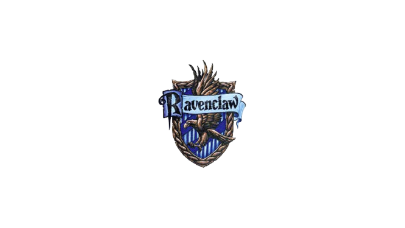

Bienvenue dans la maison
Serdaigle

Poudlard est une école fictive créée par J. K. Rowling pour l'univers de la suite romanesque Harry Potter.
Dans l'univers de Harry Potter, Poudlard est un pensionnat pour jeunes sorcières et sorciers dirigé principalement par Albus Dumbledore,
considéré comme le plus grand sorcier de sa génération. Le directeur enseigne à ses élèves la valeur du courage, de l'amitié,
de la justice et de la vérité par son attitude et ses discours. Ainsi, les élèves sont répartis dans différente maisons.
La maison Serdaigle valorisent l'entrée des sorciers qui ont les qualités suivantes : la sagesse, l'esprit, l'intellect et l'apprentissage.
C'est pourquoi la plupart des sorciers de la maison Serdaigle sont des personnes ayant beaucoup de talents et une capacité à pratiquer
plusieurs sortilèges.